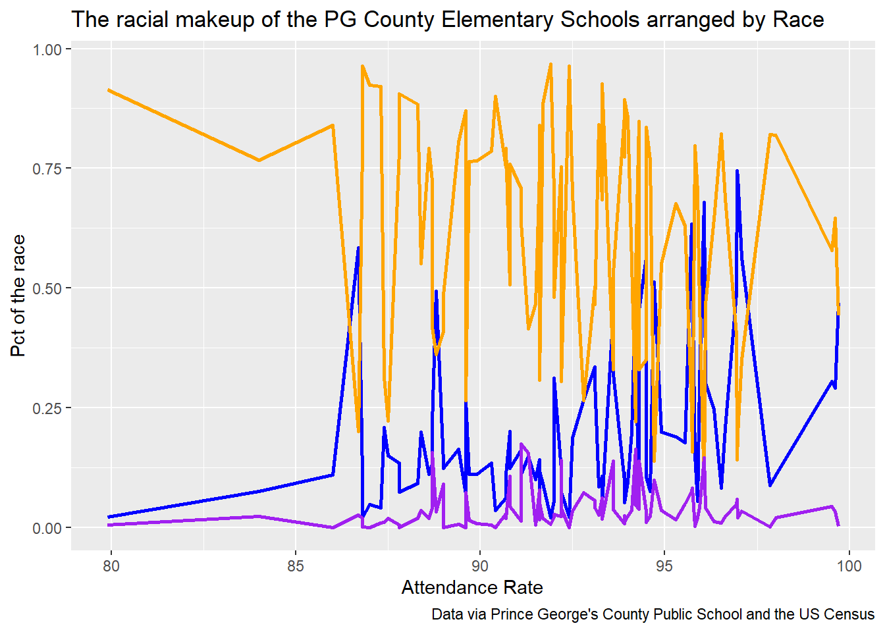
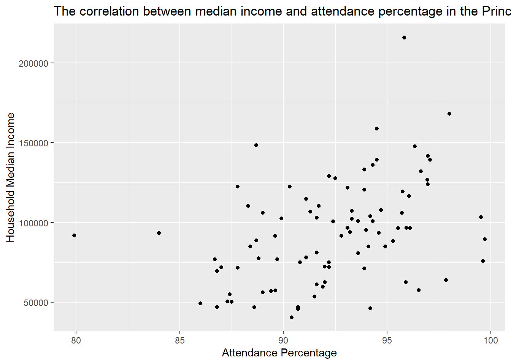
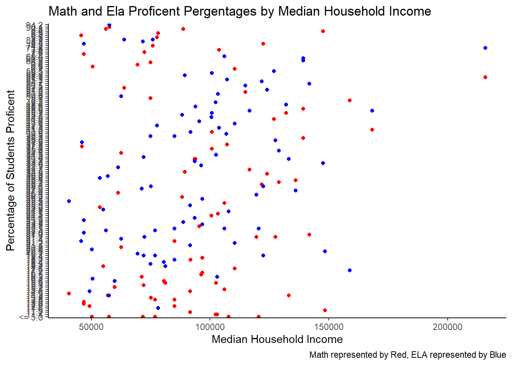
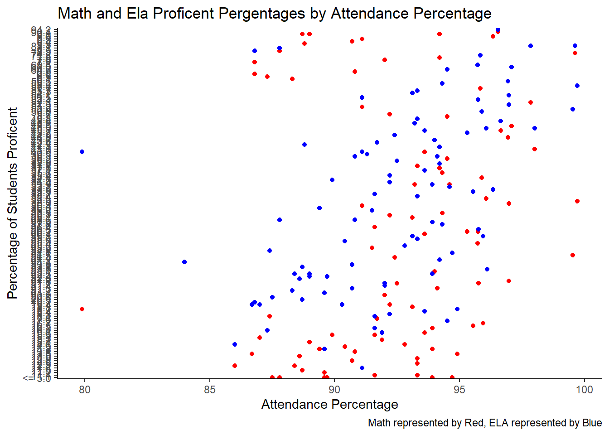

This data notebook looks at the Maryland State MCAP Testing in Prince George’s County Elementary School. It specifically focuses on the 3rd grade version of the Math and ELA (English Language Arts) and the percentage of the students at each school who are proficient in each subject. It will also look at factors surrounding students in elementary schools such as attendance, race and income level to examine the intersections between these factors and proficiency levels. The MCAP testing data was pulled from the Maryland Government’s Website. The rest of the data was pulled from the shared drive. The data has been cleaned and filtered to focus on PG County. The bulk of this data surrounds the Proficient Percentage data point from the MCAP data, meaning the percentage of the students that got a 3 or 4 on the MCAP test. The scale of the test is from 1 to 4 and 3 is considered proficient and 4 considered excellent. I focused on the Grade 3 MCAP test for this notebook. The other variables referenced are median income, census race percentages and elementary school attendance data.
options(scipen=999)library(tidyverse)
── Attaching core tidyverse packages ──────────────────────── tidyverse 2.0.0 ──
✔ dplyr 1.1.4 ✔ readr 2.1.5
✔ forcats 1.0.0 ✔ stringr 1.5.1
✔ ggplot2 3.4.4 ✔ tibble 3.2.1
✔ lubridate 1.9.3 ✔ tidyr 1.3.1
✔ purrr 1.0.2
── Conflicts ────────────────────────────────────────── tidyverse_conflicts() ──
✖ dplyr::filter() masks stats::filter()
✖ dplyr::lag() masks stats::lag()
ℹ Use the conflicted package (<http://conflicted.r-lib.org/>) to force all conflicts to become errors
library(janitor)
Attaching package: 'janitor'
The following objects are masked from 'package:stats':
chisq.test, fisher.test
library(rio)library(dplyr)library(leaflet)
Warning: package 'leaflet' was built under R version 4.3.3
library(sf)
Warning: package 'sf' was built under R version 4.3.3
Linking to GEOS 3.11.2, GDAL 3.8.2, PROJ 9.3.1; sf_use_s2() is TRUE
Warning: There was 1 warning in `mutate()`.
ℹ In argument: `pg_math_ela1 = as.numeric(math_profic_pct)`.
Caused by warning:
! NAs introduced by coercion
Question 1 Is there a correlation between race and attendance in PG County elementary schools?
pg_race_attendance <- pg_elementary_income_attendance_race_crosswalk %>%select(school_name, attendance_rate, black, white, asian) %>%arrange(desc(attendance_rate))pg_race_attendance %>%ggplot(aes(x=attendance_rate))+geom_line(aes(y=white), color ="blue", lwd =1)+geom_line(aes(y=black), color ="orange", lwd =1)+geom_line(aes(y=asian), color ="purple", lwd =1)+labs(title ="The racial makeup of the PG County Elementary Schools arranged by Race",x ="Attendance Rate",y ="Pct of the race",caption ="Data via Prince George's County Public School and the US Census" )

Question 2 Is there a correlation between median income and attendance in PG County Elementary Schools?
pg_median_income_attendance <- pg_elementary_income_attendance_race_crosswalk %>%select(school_name, attendance_rate, median_household_income) pg_median_income_attendance %>%ggplot(aes(x=attendance_rate, y=median_household_income))+geom_point()+labs(title ="The correlation between median income and attendance percentage in the Prince George's County Schools",x ="Attendance Percentage" , y ="Household Median Income",)

Analysis Previous research suggested this could be a trend in schools and this data does appear to back up the correlation between attendance and household income.
Question 3 Is there a correlation between test scores and median household income in PG County Elementary Schools?
pg_math_ela_income <- pg_math_ela %>%inner_join(pg_elementary_income_attendance_race_crosswalk, by="school_name") %>%select(school_name, math_profic_pct, ela_profic_pct, median_household_income)pg_math_ela_income %>%ggplot(aes(x=median_household_income)) +geom_point(aes(y= (math_profic_pct)), color ="red") +geom_point(aes(y=(ela_profic_pct)), color ="blue") +theme_classic()+labs(title ="Math and Ela Proficent Pergentages by Median Household Income",x ="Median Household Income",y ="Percentage of Students Proficent",caption ="Math represented by Red, ELA represented by Blue")

#Note to professor Wells, no matter what I try I cannot get any of the commands in regards to the y axis to run. When I try any of the scale_y_continuous it always fails. I tried looking up other ways to do it but nothing was running. I figured for the purpose of this milestone you would rather see the graph running and we can work on the y axis in either class or office hours. Same problem with number 4.
Question 4 Is there a correlation between test scores and attendance in PG County Elementary Schools?
pg_math_ela_attendence <- pg_math_ela %>%inner_join(attendance, by="school_name") %>%select(school_name, math_profic_pct, ela_profic_pct,attend_rate_pct)pg_math_ela_attendence %>%ggplot(aes(x=attend_rate_pct)) +geom_point(aes(y= (math_profic_pct)), color ="red") +geom_point(aes(y=(ela_profic_pct)), color ="blue") +theme_classic()+labs(title ="Math and Ela Proficent Pergentages by Attendance Percentage",x ="Attendance Percentage",y ="Percentage of Students Proficent",caption ="Math represented by Red, ELA represented by Blue")

Question 5 Looking at the schools in Prince George’s County with the highest test scores where do they rank in terms of attendance and median income?
pg_math_ela_combined <- pg_math %>%inner_join(pg_ela, by="school_name") %>%clean_names() %>%rename(math_profic_pct=proficient_pct_x, ela_profic_pct=proficient_pct_y, level_4_pct_math=level_4_pct_x, level_4_pct_ela=level_4_pct_y) %>%select(school_name, level_4_pct_math, level_4_pct_ela) %>%filter(level_4_pct_math >5, level_4_pct_ela >5) %>%slice_max(level_4_pct_math, n=1)#Note to professor: when I try to filter over 5 percent it works but it seems as the numbers filter in wrong order when I sort by descending value the numbers are out of order. I thought I fixed this by making the column a numerical value and not a character but I guess this didn't work.
Memo The most interesting finding so far has been the correlation between attendance and math proficiency in the PG County Schools. While I’m still working to get the ELA data on the same chart to compare these two factors fully. It is interesting that in the math data, the correlation between higher proficiency levels and attendance does not appear to be very high. It is a natural assumption that schools with more students attending class and learning would have higher testing scores than schools where student attendance is lower. While there is some positive correlation between these factors the correlation is not very strong. For example, the three schools with the highest attendance on the graph are very spread apart with one placing high one placing in the middle and one being closer to the bottom. Overall it’s very interesting because it would be assumed that attendance is one of the most important factors. Also now looking at the correlation between attendance and median income there does appear to be a correlation which would pack up the prior research that suggested this is a trend. #note to professor wells, I would love to show the correlation line on the graphs but am unsure how to make that work.